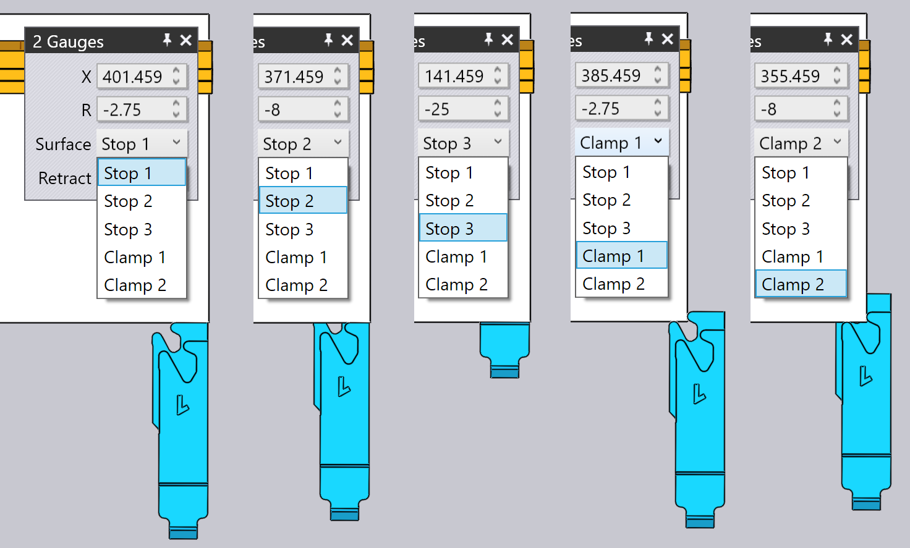

Redigera anslagsfingrarna
De bakre stopplägena för varje bockning kan justeras genom att klicka på det anslagsfingret – detta öppnar panelen Anslag, som visas bredvid.
Panelen Anslag

-
Använd väljaren för Bakre anslag för att välja det anslag som du vill redigera (du kan också bara klicka på anslaget så visas panelen för att redigera det anslaget).Om du klickar på det andra anslaget med Shift+klicka kan du redigera de gemensamma inställningarna för båda anslagen tillsammans.
-
Ingångarna Z, X och R används för att justera anslagens position i tre dimensioner. För de flesta kantpressar är axlarna som visas i bilden nedan:[1]

-
Väljaren för Griparposition används för att koppla en annan yta på anslagsfingret till delen. Vilka ytor som är tillgängliga beror på maskinen och det är inte säkert att alla ytor kan användas för alla bockningar (TecZone Bend informerar dig när en viss yta inte kan användas). Bilden nedan visar hur olika ytor används:
 -
Inställningen Retur används för att ställa in avståndet mellan anslaget och indragningen före bockning. För vissa bockningar måste anslaget dras in (i +X-led) ett visst avstånd efter att delen har klämts av stansen, men innan den bockas (för att undvika en kollision). Den här inställningen används för att styra indragningsavståndet. När du redigerar detta drar TecZone Bend in mätaren med den angivna sträckan som en förhandsgranskning, så att du kan bedöma om indragningen är tillräcklig.
-
Använd knappen Beräkna automatiskt för att be TecZone Bend att automatiskt beräkna en position för det angivna anslaget. I allmänhet kommer TecZone Bend att ha flera anslagsmöjligheter, och om du upprepade gånger klickar på knappen Auto-Place kommer du att gå igenom dessa möjligheter. För att återgå till standardinställningen stänger du anslagspanelen, klickar på anslaget igen och klickar sedan på Auto-Place – den första positionen som väljs är standardinställningen (det skulle också vara resultatet av den ursprungliga automatiska sekvenseringen och riggningen).
-
Använd knappen Vänd del för att sätta in den andra sidan av delen i maskinen och beräkna anslagen på nytt. Detta liknar knappen Flip Part i panelen för bockning.
-
Använd knapparna Tillbaka och Fortsätt för att gå till föregående eller nästa bockning och för att redigera stopplägena för den bockningen.
Avancerat
Här följer några mer avancerade operationer med anslagen:
Redigera anslag för flera bockningar
Det är möjligt att redigera stoppläget för flera bockningar samtidigt.För att göra detta väljer du först flera bockningar med Shift+klicka på bockningsnumren i Bend Navigator. Klicka sedan på ett anslag. Bilden bredvid visar hur stoppläget för bockningarna 1, 2 och 4 redigeras tillsammans:

I det här exemplet använder alla bockningar samma Z-position för anslaget, och om du redigerar den här positionen justeras Z-positionen för alla anslag. Värdena för X- och R-position är tomma, eftersom de är olika för varje bockning. Du kan dock skriva in ett X- eller R-värde och det kommer att gälla för alla bockningar.
I allmänhet kommer du sällan att behöva använda denna funktion. Anslagspanelen är medveten om begränsningarna hos en viss kantpress och kommer att tillämpa alla begränsningar som krävs. Till exempel måste R-positionerna för de två mätarna vara desamma för vissa maskiner (de har inte oberoende R1- och R2-axlar) – TecZone Bend ser till att när du redigerar R-positionen för en mätare, justeras den andra också omedelbart för att följa efter.
För vissa maskiner med 2-axliga anslagssystem ställs anslagens Z-positioner in manuellt och ändras vanligtvis inte från bockning till bockning (eftersom det skulle innebära att operatören måste justera anslagen manuellt efter varje bockning).För sådana maskiner gäller att när Z-positionen är inställd för en bockning, är den inställd på samma för alla bockningar. Kollisionsstatus, anslagets positionsstatus osv. beräknas omedelbart för alla bockningar, så det är mycket enkelt att hitta gemensamma Z1- och Z2-positioner som kan vara acceptabla för alla bockningar.
Dra anslag
Även om de exakta stopplägena kan ställas in genom att skriva in Z-, X- och R-värden, är det ofta enklare att positionera anslagen genom att dra dem mot delen.
-
Klicka en gång för att välja det anslag du vill dra.
-
Klicka på det valda anslaget och dra för att positionera det. Beroende på synvinkeln dras mätaren antingen längs ett horisontellt eller vertikalt plan.Vanligtvis börjar du med anslaget bort från delen och drar det mot delen tills det rör vid den. Du kan fortsätta att dra ytterligare (trycka in anslaget i delen), och en tråd kommer att fortsätta att röra sig, men det faktiska anslaget stannar när det rör vid delen.

Bilden ovan visar hur detta fungerar – vi börjar dra anslaget mot plåten i den riktning som pilen anger. Så snart anslaget rör vid plåten stannar det och endast en tråd fortsätter att röra sig (för att visa var du försöker dra anslaget). Detta gör det enkelt att positionera anslaget så att det bara rör vid delen utan några mellanrum eller kollisioner.I bilden ovan tittar vi på anslaget från en synvinkel som är nästan uppifrån och ned. Anslaget rör sig alltså i XZ-planet och anslagets R-värde hålls konstant. Om du roterar vyn till en vy med längsta punkten vänd mot dig kommer anslaget att röra sig i XR-planet och Z-värdet kommer att vara konstant.
Spänna och snäppa fast medan du drar
Genom att dra mätaren är det enkelt att placera mätarna exakt när du använder en av ytorna av typen Stop. När du använder en av ytorna av typen Clamp är detta svårare, eftersom du måste fästa båda ytorna på ett fastspänningsfinger mot delen.
TecZone Bend gör detta enkelt genom att tillhandahålla automatiska snäppmekanismer när anslaget är nära en möjlig fastspänningsposition. För att använda denna mekanism ska du först rotera vyn så att du ser anslagen uppifrån och ned. Dra sedan anslagen så att det hörn du vill spänna fast passar nära fingrarnas öppning:

Bilden ovan visar en pågående fastspänning. När vi drar anslagen nära en fastspänningsposition snäpper de fast i positionen Clamp 1 (se bilden ovan, mitten). När vi drar ytterligare snäpper anslagen fast i positionen Clamp 2 (se bilden ovan till höger). Observera att anslagets R-värde automatiskt justeras uppåt eller nedåt när vi flyttar till dessa olika fastspänningslägen.